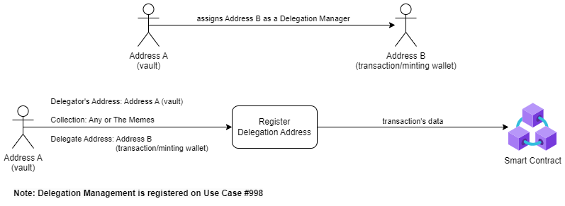

Delegation Management (Sub-delegation) allows you to reduce the number of delegation transactions you perform with your "Vault Wallet" by delegating all contract interactions, including changing delegations, to a "Delegated Wallet."
This ensures your Vault remains cold (not connected) after the initial Delegation Management delegation.
To use Delegation Management (Sub-Delegation):
- With your "Vault Wallet," perform a single transaction to register a Delegation Manager to your "Delegated Wallet".
- Utilize the "Delegated Wallet" with Delegation Management (Sub-delegation) permissions to register future or additional delegations on behalf of the delegator.

To set up Delegation Management (Sub-delegation), go to the Delegation Center section and click the Register Delegation Manager (Sub-Delegation) button.
To complete the Register Delegation Manager (Sub-Delegation) form:
- Choose the collection you want to register a Delegation Manager (Sub-delegation) for (e.g., ‘Any Collection’ for all collections or a specific collection such as 'The Memes Collection').
- Enter the delegation address that you want to grant Delegation Management (Sub-delegation) rights to (e.g., a hot wallet address).
- Click the 'Submit' button and execute the transaction.